Shape and pose from one image
The question
Can a model rebuild a bird in 3D from a single photo, finding both its shape and the camera angle, without anyone labelling the photos?
One photo
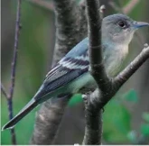
All the model gets.
Shape
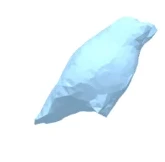
The bird as a 3D mesh.
Camera angle
How the bird is turned towards the camera: three angles. Hard to predict directly.
Background
Reconstructing a deformable object in 3D from a single photo means recovering two things at once: its shape and the camera viewpoint. Predicting the camera rotation directly is hard, and methods that do it well have relied on annotated keypoints or viewpoints, which are expensive to collect.
3D geometry in brief
Mean shape
A prototype mesh for the category; each instance is a deformation of it.
Vertices and faces
3D points and the triangles connecting them form the surface.
Texture and UV
A 2D image wrapped onto the mesh through UV coordinates.
Rotation
Azimuth, elevation and roll; Euler angles can lose a degree of freedom (gimbal lock).
Keypoints instead of angles
SLOPE-KP replaces direct rotation prediction with keypoints: characteristic locations on an object category, learned without labels, from which the pose can be solved geometrically.
How it works
- 1Rebuild the shapeLearn the bird's 3D shape and texture from single photos.
- 2Make its own labelsProject points of the rebuilt mesh onto the photo as proxy keypoints.
- 3Learn keypoints, solve the poseTrain a network to find those keypoints, then solve the camera angle with PnP.
Goldfinch
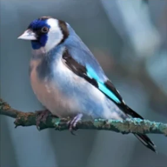
Photo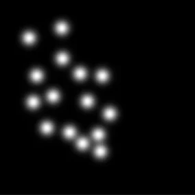
Proxy keypoints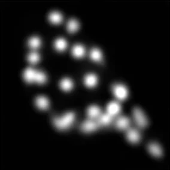
Learned keypointsRock wren
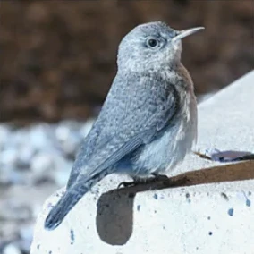
Photo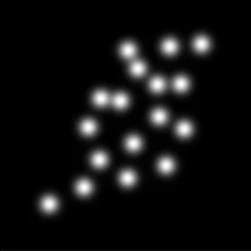
Proxy keypoints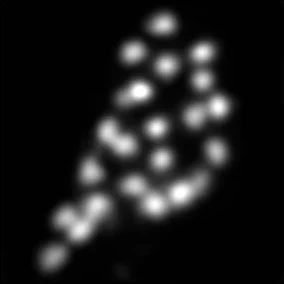
Learned keypointsBetter shapes, better poses
Trained only on single photos of birds (CUB-200-2011), and tested on its photos and on bird videos it has never seen (YouTube-VOS and DAVIS), finding the pose through keypoints beats the three ways of predicting the angle directly.
Painted bunting
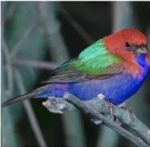
Photo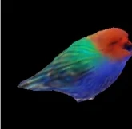
Texture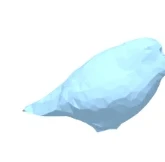
3D meshFlycatcher
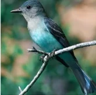
Photo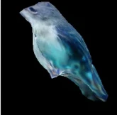
Texture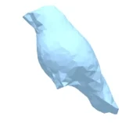
3D meshmean IoU of the rebuilt outline, against 0.62 for the best direct method (quaternions)
Higher is better: the rebuilt outline overlaps the true one more
3D angle error, against 45.5° for quaternions; lower is better
The CMR baseline without viewpoint or keypoint labels
Jaccard recall on YouTube-VOS and DAVIS bird videos, against 0.48 for quaternions
Level with the best direct method, with no video in training
IoU and Jaccard measure how much the rebuilt outline overlaps the true one; higher is better.
From photos to video
To test generalization beyond still images, birds in YouTube-VOS and DAVIS videos are tracked with the LWL tracker, cropped, and passed through the pretrained model frame by frame.
Mean IoU per test video · YouTube-VOS and DAVISaverage 0.47
Each bar is one of the 22 test videos; the dashed line is their average. Values are read from the paper's chart.
What I led
- Co-managed the project with research partners, from design and implementation to evaluation and dissemination.
- Designed and implemented the self-supervised pipeline for keypoint-based pose prediction and category-specific 3D reconstruction.
- Built the evaluation protocol on static (CUB) and dynamic (YouTube-VOS, DAVIS) data to test generalization from images to video.
- Ran large-scale training and testing on high-performance computing clusters.
- Improved mean IoU by 8% and reduced the 3D angular pose error by 5° on CUB.